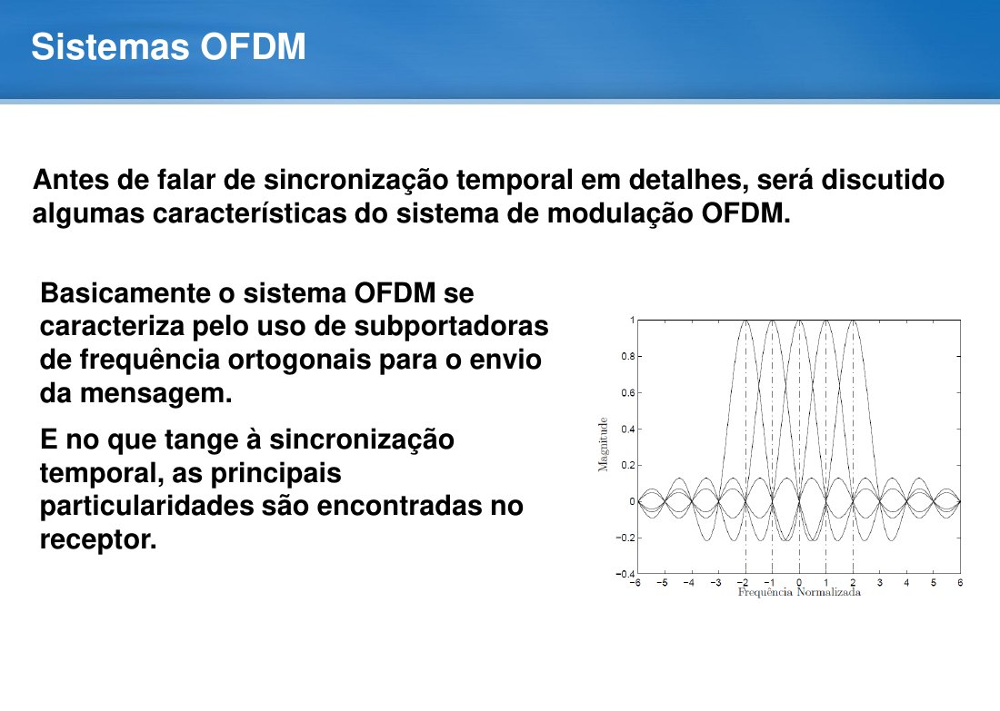
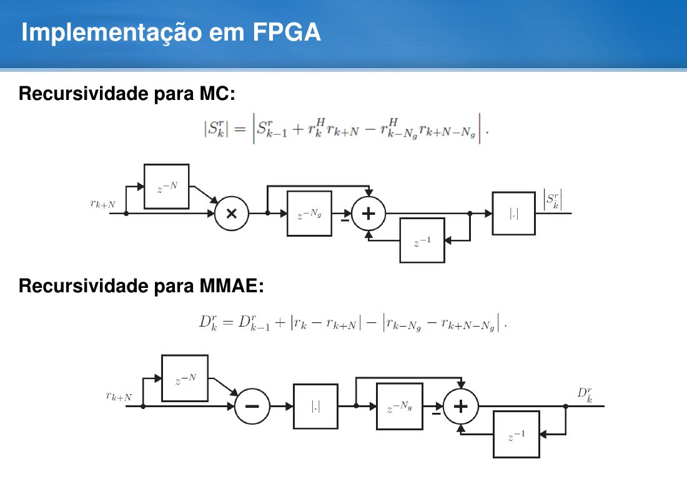
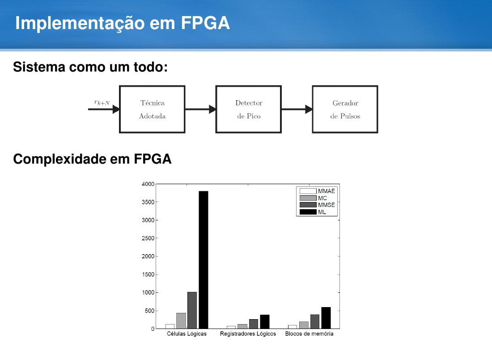
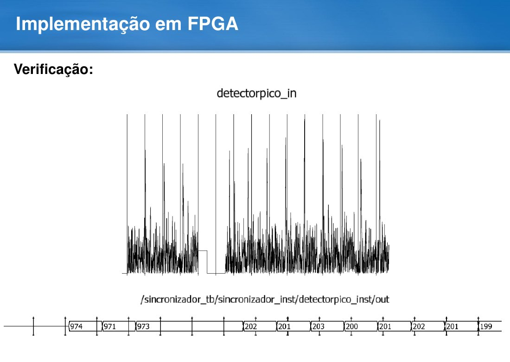
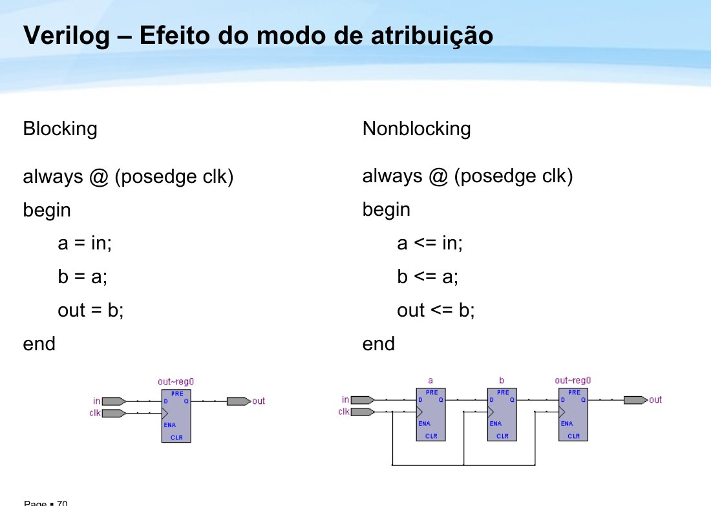
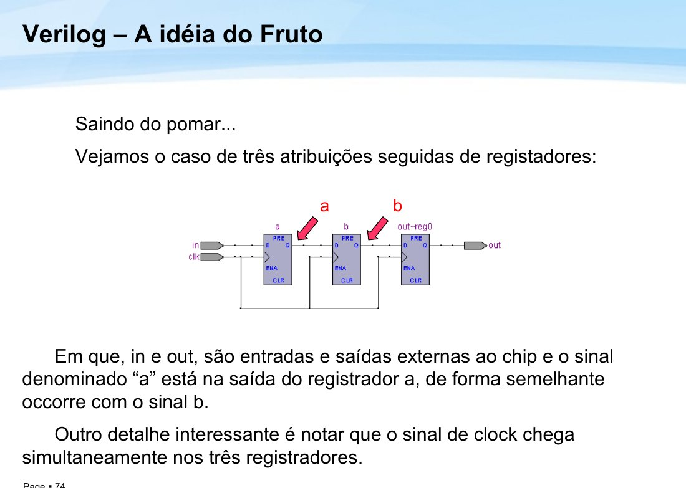
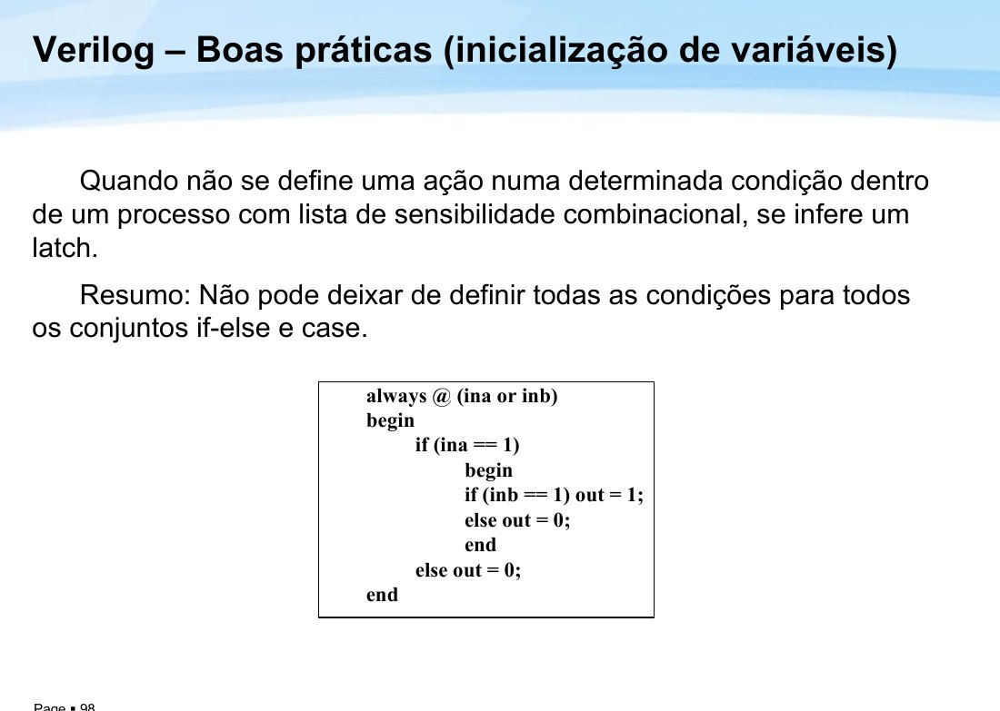

My first job in engineering was in a university laboratory in Juiz de Fora, in Brazil, on a project to build the first Latin American modem for communication over power lines. I joined in 2008, in the middle of my degree, after placing first in the selection for the project, and stayed until I left for CERN in 2011. It is where I learnt to design hardware, and most of what I did later grew out of habits formed there.
Data over the electrical grid
Power-line communication (PLC) sends data over the wires that already carry electricity, so a building or a neighbourhood gets a data network without new cables. The idea is attractive and the channel is hostile. Power lines were not designed for high frequencies: every appliance plugged in changes the impedance, branches and junctions create echoes, and motors, dimmers and switching power supplies inject impulsive noise. A modem that works on this channel has to cope with all of that at once.
The standard answer, also used in Wi-Fi and digital television, is OFDM: instead of sending one fast stream on one carrier, the transmitter spreads the data over hundreds of narrow, overlapping but orthogonal subcarriers and sends them together as a block, a symbol. Echoes are absorbed by a short guard interval, a copy of the end of each symbol placed in front of it, called the cyclic prefix. Each subcarrier can be loaded with as many bits as its own signal-to-noise ratio allows.

The modem in our laboratory, the Signal Processing and Telecommunications Laboratory of the Federal University of Juiz de Fora, used a variant called Hermitian-symmetric OFDM (HS-OFDM). By making the spectrum symmetric, the transmitted signal becomes purely real, which suits a baseband channel like a power line and, as it turned out, simplifies the receiver too. The project was funded by Brazilian agencies, among them FINEP, CNPq, FAPEMIG and CAPES.
My part: blocks of the physical layer
The physical layer of a modem is a chain of signal processing blocks: mapping bits onto constellation points, the transform that builds the OFDM symbol, the cyclic prefix, and on the receiving side the same chain in reverse, preceded by synchronisation and equalisation. My job was to specify some of those blocks, simulate them in MATLAB, write them in Verilog for Altera FPGAs, verify them in functional and timing simulation, and test them on evaluation kits.
Two of them are documented in public.
Detecting very large constellations cheaply
To reach high data rates on good subcarriers, a PLC modem uses very large QAM constellations, with thousands of points. The receiver must decide which point was sent. The textbook detector computes the distance from the received sample to every point and takes the closest, which needs multipliers and grows with the size of the constellation.
With colleagues in the lab I worked on a cheaper detector, published at the International Telecommunications Symposium in 2010. Square QAM constellations are regular, so the decision regions are rectangles whose edges are multiples of the distance between points. After clipping, offsetting and quantising the received sample, the detector only needs comparisons, no multiplications at all, and a small table maps the region to bits. We called it the heuristic decision region approach.
On an Altera Stratix III, the 16-QAM detector needed 56 logic cells and no multipliers, ran at 500 MHz and had one clock cycle of latency. The conventional maximum-likelihood detector needed 409 logic cells and 32 multipliers and ran at 226 MHz with four cycles of latency. The same approach scaled to 4,096-QAM with 847 logic cells, still in one cycle. In simulation the loss against the theoretical curve stayed between 0.03 and 0.15 dB, depending on the constellation.
That result is the one I still think about most. The saving did not come from a cleverer circuit for the same operation. It came from noticing that, for this particular problem, the expensive operation was not needed.
Finding where each symbol begins
My bachelor's thesis was the synchroniser of the receiver: the block that finds where each OFDM symbol begins in the incoming stream. If the cut is a few samples off, every subcarrier is corrupted at once. The established methods compare a window of samples with the window one symbol later, using the cyclic prefix as a fingerprint, and differ in how they measure the match.
The same observation as with the detector applied here. Because the HS-OFDM signal is real, the match can be measured by subtracting the two windows and adding up the absolute differences, with no multiplication. I called this estimator MMAE, minimum mean absolute error. In simulation it was the most accurate of the four methods compared, as long as transmitter and receiver agree in frequency, which on a cable they do.
The FPGA implementation used another trick that made all four affordable: the sum over the window does not need to be recomputed for every sample. Adding the newest term and subtracting the oldest one is enough, so the cost no longer depends on the window length.

Around the estimator, a peak detector and a pulse generator complete the synchroniser. On an Altera Cyclone II the MMAE estimator needed the least logic of the four, the classical correlation one came close, and the maximum-likelihood one needed several times more, because it multiplies, divides and takes square roots.

The whole design is described in the summary of my bachelor's thesis, in plain words and in technical terms.
Verification, written down
The habit I am most grateful for is checking hardware against a model, number by number. For the synchroniser, a program fed the same data to the Verilog design in simulation and to the MATLAB model and compared their outputs, block by block, until they were identical. Because every bus was sized so that nothing was truncated, identical was the right target, not "close enough".

In 2009 I also wrote one of the lab's standard operating procedures, on running functional and timing simulation from Quartus II with ModelSim through NativeLink. It explains the difference between the two: functional simulation checks what the design does, timing simulation checks whether it still does it once the real delays of the chip are included, and the same design and test bench can serve for both. It is a small document. It was the first time I wrote down a procedure so that the next person would not have to discover it again, and I have kept doing that since.
Teaching the team Verilog
In 2011, before leaving for CERN, I wrote and taught a Verilog course for the modem team, focused on code that synthesises well: 120 slides in Portuguese, from the difference between writing software and describing hardware to test benches. The slides I would still keep are the ones about the mistakes everyone makes once.
The most important is the difference between blocking and non-blocking assignment. Inside a clocked block, writing a = in; b = a; out = b; with blocking assignments builds a single register, because each line sees the new value of the previous one. Writing the same with non-blocking assignments builds three registers in a row, a shift register. The code looks almost the same, and the hardware is different.

To explain why, I used an analogy that the course calls the fruit idea. An apple is the fruit of a seed, so the apple cannot change the seed that produced it. It can only produce new seeds, for the next season. In a clocked circuit, the value a register takes at a clock edge is the fruit of that edge: it cannot influence what the other registers capture at the same edge, only what they capture at the next one.

The other classic is the inferred latch: in a combinational block, if some branch of an if-else or a case does not assign a value to an output, the tool has to remember the old value, and it builds a latch to do so. The rule I gave was short: in combinational logic, every output gets a value in every branch.

The course slides are on this site, linked at the top of the page.
What I took with me
Looking back from fifteen years of trigger electronics, three things from this project stayed. Look for the special property of your problem before optimising the circuit: a real-valued signal removed the multipliers from two different blocks. Size every bus so that the hardware matches the model exactly, and then check that it does. And write things down for the next person. The tools have changed many times since, but those three have not.